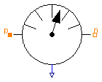

For analysis of magnetic networks, only magnetic potential differences and magnetic flux are variables of interest. For that reason, a magnetic potential sensor is not provided.
| Name | Description |
|---|---|
| MagneticPotentialDifferenceSensor | Sensor to measure magnetic potential difference |
| MagneticFluxSensor | Sensor to measure magnetic flux |

| Type | Name | Description |
|---|---|---|
| output RealOutput | V_mag | Magnetic potential difference between ports p and n as output signal |
| PositiveMagneticPort | p | |
| NegativeMagneticPort | n |
model MagneticPotentialDifferenceSensor
"Sensor to measure magnetic potential difference"
extends Modelica.Icons.RotationalSensor;
Modelica.Blocks.Interfaces.RealOutput V_mag(
redeclare type SignalType = SI.MagneticPotentialDifference)
"Magnetic potential difference between ports p and n as output signal";
Interfaces.PositiveMagneticPort p;
Interfaces.NegativeMagneticPort n;
equation
p.Phi = 0;
n.Phi = 0;
V_mag = p.V_mag - n.V_mag;
end MagneticPotentialDifferenceSensor;
| Type | Name | Description |
|---|---|---|
| output RealOutput | Phi | Magnetic flux from port p to port n as output signal |
| PositiveMagneticPort | p | |
| NegativeMagneticPort | n |
model MagneticFluxSensor "Sensor to measure magnetic flux"
extends Modelica.Icons.RotationalSensor;
Modelica.Blocks.Interfaces.RealOutput Phi(
redeclare type SignalType = SI.MagneticFlux)
"Magnetic flux from port p to port n as output signal";
Interfaces.PositiveMagneticPort p;
Interfaces.NegativeMagneticPort n;
equation
p.V_mag = n.V_mag;
Phi = p.Phi;
0 = p.Phi + n.Phi;
end MagneticFluxSensor;